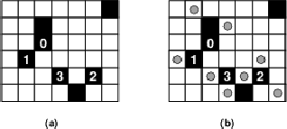
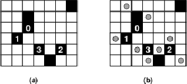

Latin America - South America - 2005/2006
| 3476 - Light Up Latin America - South America - 2005/2006 | ||||
| Submit | Ranking | ||||
Light Up is a puzzle set in a rectangular board divided in smaller squares. Some squares in the board are ``empty" (white squares the figure below), some squares are ``barriers" (dark squares in the figure below). A barrier square may have an integer number i associated to it
(0
In this puzzle the goal is to ``light up" all the empty squares by placing lamps in some of them (lamps are depicted as circles in the figure). Each lamp illuminates the square it is on, plus all squares in line with it, horizontally or vertically, up to a barrier square or the board end.
A winning configuration satisfies the following conditions:
You must write a program to determine the smallest number of lamps that are needed to reach a winning configuration.
The input contains several test cases. The first line of a test case contains two integers N, M
For each test case in the input your program must produce one line of output, containing either an integer indicating the smallest number of lamps needed to reach a winning configuration, in case such a configuration exists, or the words `No solution'.
 i
i 4)

Figure 2: (a) Puzzle with 6 rows, 7 columns and 7 barriers; (b) a solution to the puzzle.
4)

Figure 2: (a) Puzzle with 6 rows, 7 columns and 7 barriers; (b) a solution to the puzzle.
Input
 N
N 7, 1
7, 1 M
M 7)
7)
 B
B N x M)
N x M)
 R
R N)
N)
 C
C M)
M)
 K
K 4)
4)
Output
Sample Input
2 2
0
2 2
1
2 2 1
6 7
7
2 3 -1
3 3 0
4 2 1
5 4 3
5 6 2
1 7 -1
6 5 -1
0 0
Sample Output
2
No solution
8
South America 2005-2006